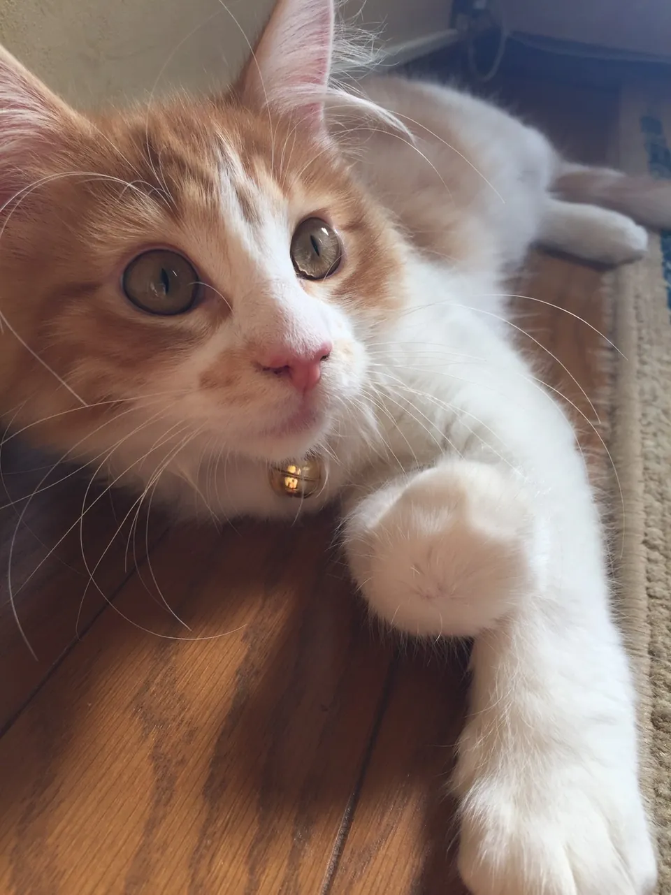
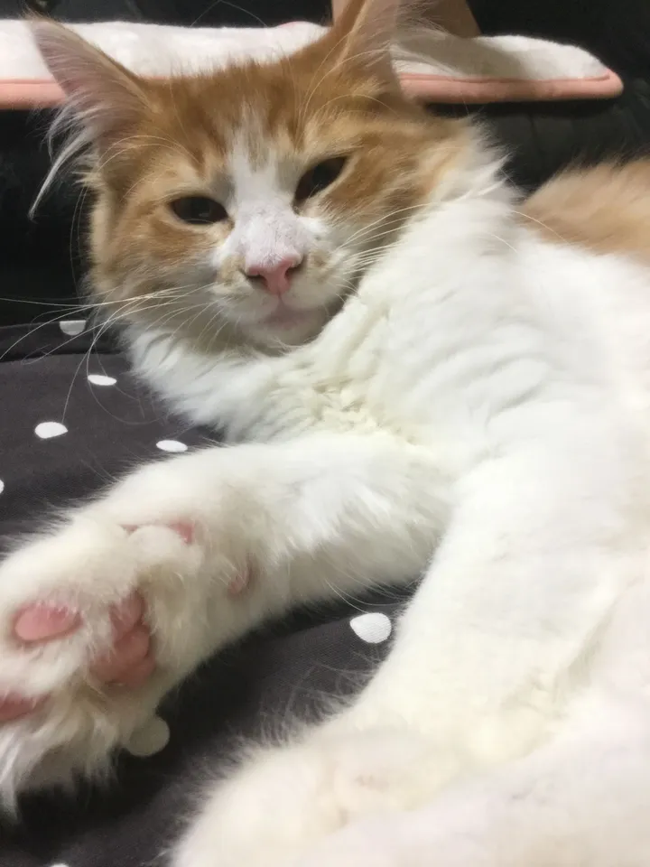
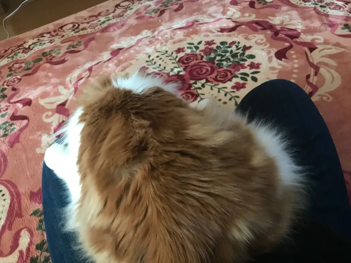
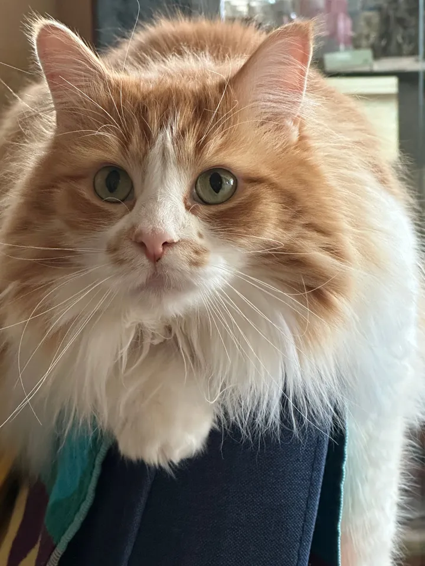

メインコンテンツに移動する
KINAKO PHOTO ALBUM
Gallery

Since 2016
きなこの記録
2016年からの写真を、年ごとにたどれるアルバムにしました。
年ごとの写真を見る
(Profile)
Cat / Male
2016.06 — 2024.12
Norwegian Forest Cat
K
I
N
A
K
O
きなこ
性別
オス
品種
ノルウェージャンフォレストキャット
期間
2016.06
–
2024.12
好きな場所
ソファ・膝の上
性格
とても人懐こく、誰が来ても自分のファンだと思い込んで突撃していくような子でした。

子猫のころ

膝にちょこんと座る

アンバランス